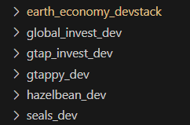
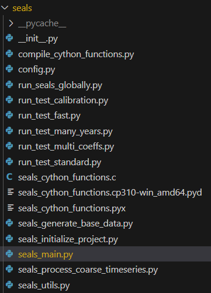
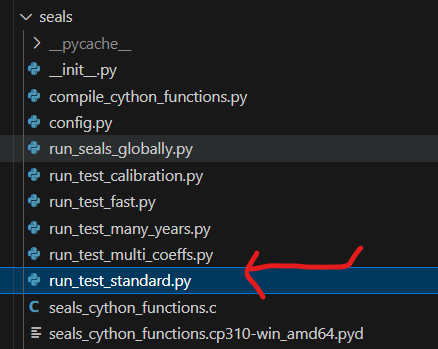

First SEALS run walkthrough
Getting set up
- Make sure you have followed all of the steps in the installation page.
- In particular, Clone the SEALS and Hazelbean repositories in the correct location, as described here
- You will know you’ve got them installed correctly if your VS Code Explorer tab shows the repositories without an error message (Figure 1)

Explore the SEALS code
- In the VS Code Explorer tab, navigate to your seals_dev directory (Figure 1)
- Quick note about file organization
- The root directory of seals_dev contains more than just the seals library, such as directories for scripts, images, etc.
- The library itself is in the seals subdirectory
seals_dev/sealswhich may seem redundant but is necessary for the way Python imports work. - If you inspect the seals directory, you will see an
__init__.pyfile. This make Python able to import the directory as a package.
- You will also see a
seals_main.pyfile. This is where most of the actual logic of seals is.
- Quick note about file organization

Run files
- One does not simply run a
main.py(Figure 1)- Instead, we’re going to have a “run file” that sets up the code and then runs the
seals_main.pyfile - Open up the
run_test_standard.pyfile in the seals directory (Figure 2)
- Instead, we’re going to have a “run file” that sets up the code and then runs the
- We will setup this file and then finally run it (in debug mode via the launch configs in the earth_economy_devstack repository)

Setting up the run file
- The run file begins with standard python imports
- Then in the
if __name__ == '__main__':block, we define the project directory and initialize the project flow object- The reason for putting it in this block is so that you don’t accidentally run the code when you import the file in another script
- This file then creates a ProjectFlow objected, assigned to the variable p.
- Python is an object-oriented programming langage
- The hb.ProjectFlow() defines a
class, which is like a recipe for an object - When we call it, it generates on
objectof that class, which we assign to the variablep
- The hb.ProjectFlow() defines a
- Python is an object-oriented programming langage
import os, sys
import seals_utils
import seals_initialize_project
import hazelbean as hb
import pandas as pd
main = ''
if __name__ == '__main__':
# Create a ProjectFlow Object to organize directories and enable parallel processing.
p = hb.ProjectFlow()Directories and project name
- SEALS (and the EE Devstack) assumes (or softly requires) that you put all code and data somewhere relative to the user’s home directory
os.path.expanduser('~')- Can put it in sub-directories with
extra_dirs = ['Files', 'seals', 'projects']
- Can put it in sub-directories with
- If you followed the EE method, you will have already created the
sealsdirectory at<user_dir>/Files/seals- In the
sealsdirectory, your code is inseals_dev - In the
sealsdirectory, you also will have aprojectsdirectory- This is created automatically if its not there
- All data and outputs will be saved in this directory
- As a best practice, you should not save data in the
seals_devdirectory
- As a best practice, you should not save data in the
- In the
- Given the directory structure above, p.project_name will also be use
# Assign project-level attributes to the p object (such as in p.base_data_dir = ... below)
# including where the project_dir and base_data are located.
# The project_name is used to name the project directory below. If the directory exists, each task will not recreate
# files that already exist.
p.user_dir = os.path.expanduser('~')
p.extra_dirs = ['Files', 'seals', 'projects']
p.project_name = 'test_examples'
p.project_name = p.project_name + '_' + hb.pretty_time() # If don't you want to recreate everything each time, comment out this line.
# Based on the paths above, set the project_dir. All files will be created in this directory.
p.project_dir = os.path.join(p.user_dir, os.sep.join(p.extra_dirs), p.project_name)
p.set_project_dir(p.project_dir) Using Objects
- The
pobject we created will organize input variables (called attributes when assigned to an object)- Like this:
p.attribute_name = 'ItsName'
- Like this:
- The
pobject also has functions tied specificially to it (called methods when assigned to an object)- Such as:
p.validate_name() - Methods operate on the object that defined it
- So
validate_name()is specifically looking at thepobject, often doing something to thepobject, like fixing value ofp.attribute_name
- So
- Such as:
Scenario Definitions
Scenario definitions CSV
- The
scenario_definitionsfile specifies what defines the many different scenarios you want to run- Each row will be one scenario
- Each time the model runs a new scenario, it will update its attributes based on this row
- If you haven’t run SEALS yet, you won’t have a
scenario_defintionsfile, so it will download the default one on the first run
p.scenario_definitions_filename = 'test_standard_scenarios.csv'
p.scenario_definitions_path = os.path.join(p.input_dir, p.scenario_definitions_filename)
seals_initialize_project.initialize_scenario_definitions(p)Scenario types
- Scenario type determines if it is historical (baseline) or future (anything else) as well as what the scenario should be compared against. I.e., Policy minus BAU.
p.scenario_type = 'bau'Automatically downloading data
- This computing stack also uses hazelbean to automatically download needed data at run time.
- In the code block below, we set p.base_data_dir to a location where we want to store lots of very large files.
- Hazelbean will look here for certain files that are necessary and will download them from a cloud bucket if they are not present. T
- This also lets you use the same base data across different projects.
- The final directory has to be named base_data to match the naming convention on the google cloud bucket.
p.base_data_dir = os.path.join('Files/base_data')Running the model
After doing the above steps, you should be ready to run run_test_seals.py. Upon starting, SEALS will report the “task tree” of steps that it will compute in the ProjectFlow environment. To understand SEALS in more depth, inspect each of the functions that define these tasks for more documention in the code.
Once the model is complete, go to your project directory, and then the intermediate directory. There you will see one directory for each of the tasks in the task tree. To get the final produce, go to the stitched_lulc_simplified_scenarios directory. There you will see the base_year lulc and the newly projected lulc map for the future year:
[THIS IS NOT THE CORRECT IMAGE]
Open up the projected one (e.g., lulc_ssp2_rcp45_luh2-message_bau_2045.tif) in QGIS and enjoy your new, high-resolution land-use change projection!